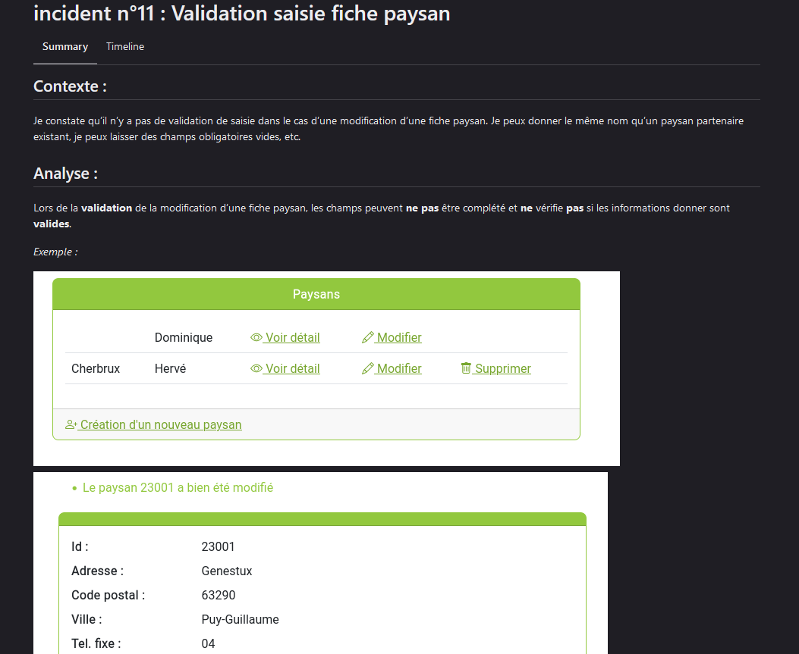
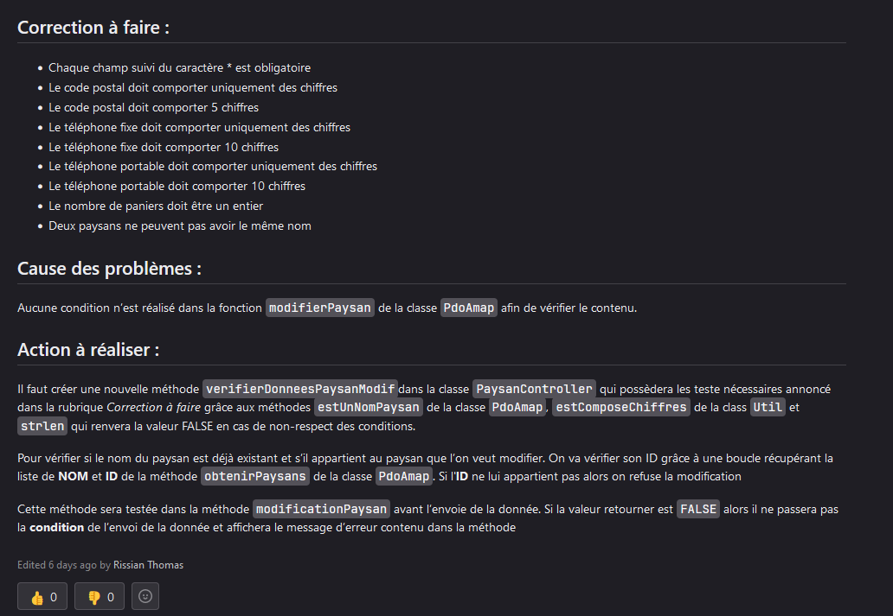
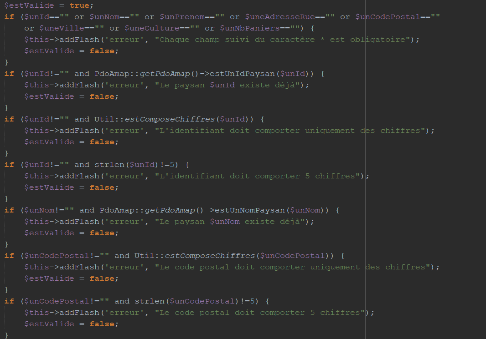

correction d'incident du site AMAP Auvergne itération 1a
Contexte :
Cet AP a été réalisé seul et nous avions comme objectifs :
- Analyser les incidents proposer par notre professeur
- Proposer des solutions pour corriger le problème
- Corriger l’erreur sur le site
Nous avons dû Analyser l’application afin de comprendre son fonctionnement.
Notre professeur nous a donné un certain nombre d’incident que nous devions régler. Chaque incident pris par un étudiant ne pouvait être réalisé que par lui. L’objectif était de tous les corriger.
Nous devions passer par des tickets assez détailler qui expliquaient l’erreur, afin de pouvoir par la suite réaliser les modifications nécessaires sur l’application donner par notre professeur.
Chaque ticket devait être validé par notre professeur afin de passer à la suite, toutes erreurs dans le ticket étaient écris en commentaire afin de le résoudre.
Le problème devait être résolu sur l’application et push sur la forge logicielle framagit sur une nouvelle branche. Chaque ticket devait avoir une branche et chaque projet branche était indépendante et non liée aux autres tickets.


Environnement technologique :
- firefox
- php
- twig
- Netbean (debug)
- pgAdmin (PostgreSQL)
- framagit
- ticket au format markdown
compétences mobilisées :
- B1.1.2 : Exploiter des référentiels, normes et standards adoptés par le prestataire informatique
Nous devions respecter les standards PSR afin de nous habituer et permettre à toute autre personne externe de le comprendre (respecter les normes):
Après l’activité j’ai pu constater que je n’avais pas respecté la réglementation durant le projet suite à un commentaire de mon professeur que j’appliquerai dans le prochain projet.
- B1.2.1 : Collecter, suivre et orienter des demandes
Nous avions à réaliser des tickets assez précis décrivant l’erreur et comment la résoudre :
j’ai pu réaliser des tickets qui respectaient la syntaxe markdown comme demander tout en expliquant le plus précisément possible l’incident.
- B1.2.3 : Traiter des demandes concernant les applications
Après avoir réalisé le ticket nous devions résoudre cette erreur dans l’application :
j’ai pu la résoudre facilement après plusieurs avis de mon professeur par le biais des commentaires de la plateforme framagit. Par contre je n’avais pas correctement renseigné la documentation technique de la nouvelle fonction créer que j’ai pu réaliser après.
- B1.4.1 : Analyser les objectifs et les modalités d’organisation d’un projet
Pendant cet Ap nous travaillons par ticket sur framagit pour pouvoir expliquer notre analyse ainsi que comment remédier au problème. Chaque ticket était trié selon 3 catégories (bloquant, majeur, mineur) qui correspondait à l'importance du problème.
Chaque ticket était pris en charge par 1 personne et devait pour chaque incident créer une nouvelle branche avec comme nom le numéro de ticket et que chaque incident résolu parte du projet principale. Ils devaient recenser 3 informations :
- Expression du besoin
- Analyse du problème
- Spécification
Chaque information que l'on devait demander devait passer par la forge logicielle pour avoir une trace.
